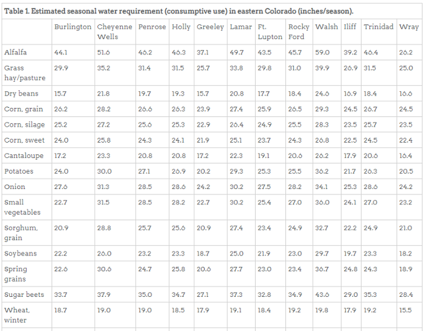

Hydrology Concepts - The Hydrologic Cycle
Hydrology is the study of water.
As a science, hydrology has evolved in response to the need to understand Earth's complex water systems and help solve water problems. The supply of water available for human use is limited by nature. Although there is plenty of water on Earth, it is not always in the right place at the right time and of the right quality.
Hydrology encompasses the occurrence, distribution, movement and properties of water and its relationship with the environment within each phase of the hydrologic cycle, shown at right. The hydrologic cycle, or water cycle, is a continuous process by which water is purified by evaporation and transported from the Earth's surface (including the oceans) into the atmosphere and back to the land and oceans. All of the physical, chemical and biological processes involving water as it travels its various paths in the atmosphere (e.g., condensation and precipitation), over and beneath the Earth's surface (e.g., infiltration and snowmelt runoff) and through growing plants (e.g., transpiration) are studied.
There are many pathways water may take in its continuous cycle of falling as rainfall or snowfall and returning to the atmosphere. Water may be captured for millions of years in polar ice caps. It may flow to rivers and finally to the sea. It may soak into the soil to be evaporated directly from the soil surface as it dries or be transpired by growing plants. It may percolate through the soil to ground water reservoirs (aquifers) to be stored or it may flow to wells or springs or back to streams by seepage. The cycle for water may be short or it may take millions of years.
~ From the USGS Water Science School.
Hydraulics, a related field, is the study of the conveyance of water or other liquids through pipes or channels. Hydraulic concepts include pipe flow, dam design, turbines, hydropower, flow measurement and river channel erosion. Free surface hydraulics is the branch of hydraulics dealing with flows that occur in rivers, canals and lakes (Wikipedia).
Hydrology Concepts - Hydrographs
Hydrographs summarize river flows over a period of time, using a “time series” of data. A time series is a time-ordered sequence of dates (possibly also with time of day) with corresponding data values. Hydrographs provide a way to understand variation, trends and relationships in water data. Other data types can be similarly graphed, but the word “hydrograph” is typically used when presenting water depth, flow and/or volume over time.
In Colorado, average annual statewide precipitation is 16 inches, with most regions receiving 12-16 inches. The mountainous areas of the state
receive more water. Most areas above 10,000 feet in elevation receive 25 inches or more annually, mostly in the form of snow. The snowpack typically
builds up in the early spring from storms originating in the Pacific Ocean that move eastward. The snowpack begins to melt in April and feeds
into the State’s rivers. Peak runoff from snowmelt occurs in May and June. According to the Natural Resources Conservation Service (NRCS),
approximately 80% of river runoff comes from snowmelt. The remainder comes from rainfall and infiltration from groundwater (
Citizen's Guide to Where Your Water Comes From , p.4-6).
, p.4-6).
Understanding snowmelt amount and timing is critical to water resources planning. The amount of snow and rain that feeds into rivers varies within a single year and also from year to year. Hydrographs show the rate of flow (discharge) versus time past a specific point in a river, typically a streamgage (discussed in a later section). The rate of flow is typically expressed in cubic feet per second (cfs).
This interactive visualization shows five annual hydrographs from a streamgage on Boulder Creek. Each line represents a year of flow data and shows the variability that can occur from year to year. To select/deselect years on the plot, click on the year in the legend at the bottom. Note that even though these years represent a wide range of flows observed on Boulder Creek at this location, flows are most variable from mid-April to August.
Hydrology Concepts - Variability
Hydrologic variability occurs across space and time. Within the South Platte Basin, flows can vary between sub-basins within the same year, with one sub-basin experiencing drought and another experiencing adequate water supplies. Variation can occur because of elevation, regional weather patterns, water storage projects, impacts of specific storm events and other reasons.
This interactive visualization shows annual flow volume in acre-feet from 1950 to 2011 for 33 streamgages in the basin, representing the South Platte River and many of its tributaries. Streamgages on the South Platte River are ordered from upstream to downstream and tributaries are generally arranged in order from where their confluences are with the South Platte River. Within a streamgage, average volumes are ranked and placed into percentile categories as follows:
- Less than 10th percentile = Much Below Normal
- 10th - 24th percentile = Below Normal
- 25th - 75th percentile = Normal
- 76th - 90th percentile = Above Normal
- Greater than 90th percentile = Much Above Normal
It is important to recognize that the data used in an analysis can be impacted by human actions. Streamgage measurements reflect the impacts of diversions, reservoir releases and other impacts. Therefore, evaluating streamgage data also indirectly reflects other conditions in the basin. Annual data can also be impacted by extreme events. For example, a streamgage may indicate drought conditions for the majority of the year and one large rain event may skew the annual result (i.e., the September 2013 flood event centered on the Colorado Front Range). It may be necessary to view data at finer detail, such as a monthly interval, to fully understand conditions. Fully understanding drought conditions requires evaluation of snowpack, precipitation, natural flows and other data.
Hydrology Concepts - Water Resources System
In addition to the natural hydrologic system, water resources in Colorado include human-created systems with a few constructs:
- legal constructs, such as water law
- physical constructs, such as infrastructure that is used to store and convey water
- operational constructs, such as agreements that control how systems are operated to deliver water to paying customers or shareholders
Surface water use in Colorado is administered by the Division of
Water Resources (DWR). DWR is tasked with providing the dependable distribution
of water in accordance with statutes, decrees and interstate compacts. DWR relies on real-time and other data from its own streamgages,
as well as data from federal agencies such as U.S. Geological Survey
(USGS), Bureau of
Reclamation, Natural Resources Conservation Service (NRCS) and local
entities such as cities and water districts.
The complexity of water resources systems is illustrated by “straight line diagrams” that combine physical and legal information to help
people understand water resources systems. The diagrams are graphical linear representations of structures and/or water rights for a given stream
system that allows a large amount of complex information to be observed at a glance. This straight line diagram of water district 04 (Big Thompson
River) can also be viewed here.
Hydrology Concepts - Streamgages and Measuring Flows
In order to manage the water resources of Colorado it is necessary to measure the surface water flow in natural streams and water distribution
infrastructure. Streamflow, also called discharge, in Colorado is measured by the U.S. Geological Survey (USGS),
Colorado Division of
Water Resources (DWR), local water utilities and other entities that need to know flow amounts for reporting and operations. Sensors and
data loggers (also called data collection units (DCUs) or stage discharge recorders (SDRs)) may record measurements at regular intervals and can be
triggered by changing values such as a rain event. These measurements, often referred to as real-time or instantaneous, may or may not be publicly
available. Data are often reported at 15-minute intervals, representing average conditions over that time. These values are then aggregated to
longer intervals including hour and day. Average values are often suitable for water supply management operations, whereas instantaneous values
may be used for peak flows or other critical conditions.
It is important to recognize that a daily average flow, such as reported by USGS or DWR, does not mean that the flow was the same from midnight to midnight; in actuality, the flow could have varied significantly during the day and using shorter-interval data is necessary to understand the variation.
Each organization that collects data assigns a station identifier and name to the station. Multiple data sources, identifier conventions and data formats can present challenges to finding and using data.
This map shows active streamgages operated by DWR, USGS or other entities such as a municipal utility. Click on a circle for more information,
including links to the website for each gage, which shows current flow conditions measured by the gage. (Source:
CDSS Map Viewer, Surface Water Current Conditions layer, "Active Gage - Stream" option.)
Measuring streamflow in natural channels to a reasonable level of accuracy can be challenging. See the USGS information about how streamflow is measured. It is
particularly challenging to measure flow in channels that change over time, such as the South Platte River in wide, sandy locations.
Hydrology Concepts - Diversion Headgates and Measuring Diversions
To divert water from a river into a ditch or canal, diversion structures are installed in the river. Structures divert water for several reasons: to directly deliver water to agricultural land, to carry water to other ditches, to divert water into a storage reservoir or to deliver water for other purposes such as for municipal use. Structures can be in the form of dams, pumps and headgates. Headgates are typically metal gates that are raised and lowered to allow a controlled amount of water to flow into a ditch or canal. The amount diverted depends on the water needed at that time and location, adherence to Colorado water law priority system and river conditions. Water may not be physically available if the river flow is low and may not be taken if flows are extremely high and may damage infrastructure. Diversion structures are identified using a Water District Identifier (WDID), consisting of a two-digit water district identifier and five-digit structure identifier. Each diversion structure has one or more water rights that indicate seniority, use type and amount.
Measurement of diversions occurs in various ways. Larger diversion structures may include a measurement structure such as a weir which, in
combination with a water level sensor and rating to convert water level (stage) to flow (discharge), provides a reasonable estimate of the diversion
amount. Many large diversion structures now have telemetered automated data measurement. Similar to streamflow, diversion measurements may be available
as real-time data (15-minute or hourly) or as longer intervals that are typically used for historical data analysis. The accuracy of diversion
measurement will depend on the measurement device design and calibration and can be impacted by sediment, flow impediments such as tree trunks,
technology issues and degradation of the infrastructure, such as settling, cracking and vegetation growth. Diversion records maintained by DWR indicate how much water was
measured (or estimated) to have been diverted at a structure.
This map shows ditch diversion structures in the Basin, of which there are over 3,500 (note these are just ditch diversions and not diversions for other structure types, such as wells). Structures are color-coded based on water source: the 10 streams with the most diversions are colored and listed in order (i.e., the South Platte River has the most ditch diversions, followed by the Cache la Poudre River); diversions from all other streams are shown in black.
The table below lists the number of ditch diversions on each stream in the Basin for those streams that have 10 or more ditch diversion structures.
Source for table and map: Colorado's Decision Support Systems, Structures
shapefile.
Hydrology Concepts - Groundwater and Measuring Water Level
Groundwater is water that is held underground within aquifers, which are geological formations (essentially rock or soil layers). The water is
contained within tiny pore spaces or cracks in the solid material. There are three types of aquifers: alluvial, sedimentary bedrock and fractured rock.
Alluvial aquifers are generally composed of shallow sand and gravel deposits. They are often also called tributary aquifers because they exchange
water with surface streams. Groundwater in alluvial aquifers is recharged by the infiltration of rain and snowmelt through the soil. Seepage from
irrigation canals and reservoirs and inflows from nearby aquifers also contribute water. The South Platte Alluvial Aquifer is one of the largest
and most utilized alluvial aquifers in Colorado (Citizen's Guide to Where Your Water Comes From, p.15-16).
Sedimentary bedrock aquifers occur deep underground primarily in sandstone and limestone. These types of aquifers are not often hydraulically connected to nearby streams. They still have recharge areas like alluvial aquifers, but these may be many miles from the actual aquifer. Deep aquifers require long periods of time to recharge – potentially thousands of years. The Denver Basin aquifer system is an example of a sedimentary bedrock aquifer (Citizen's Guide to Where Your Water Comes From, p.17).
Fractured rock aquifers occur in bedrock that contains cracks and fractures due to the folding and faulting of the rock over millions of years. These types of aquifers are common in mountainous areas. Springs occur where fractures in the rock intersect the surface (Citizen's Guide to Where Your Water Comes From, p.19).
Groundwater is used for city water supplies, industry, irrigation, rural domestic use and livestock watering. The State Engineer has estimated that about 2 million acre-feet of groundwater is pumped and used annually, which amounts to approximately 20% of all water used in Colorado (Citizen's Guide to Where Your Water Comes From, p.29).
Groundwater from aquifers is made accessible to users via wells. Groundwater use is administered and enforced by the Division of Water Resources. This tool, from Colorado's Decision Support Systems (CDSS)shows that there
are over 13,000 wells in the South Platte Basin alone. (Click on the Map tab to see locations in the Basin). Wells are numerous because they
allow easy access to water. Wells are often drilled in locations that are convenient to farms and homes, whereas surface water may be located much
farther away.
Small wells, such as domestic wells, are constructed after obtaining a well permit and have limited size (50 gallons per minute or less). Larger
wells, such as used for agriculture and municipal supply, typically have a Water District Identifier (WDID) similar to headgates, with similar
diversion record data.
Water level data for wells is also important because it relates to the depth of wells needed to access the water, and in some areas,
high water tables have resulted in flooding fields and infrastructure (see HB1278 Study: Groundwater Modeling Efforts for the Gilcrest/LaSalle and Sterling areas).
Hydrology Concepts - Return Flows
It may seem as though water is continuously removed from streams for agricultural, municipal and other uses and therefore the amount of water
in a stream decreases as one moves downstream. However, water that is diverted for municipal, industrial or agricultural purposes that is not
consumed returns to rivers and/or aquifers by surface flows or underground flows. For example, the U.S. Geological Survey has estimated that
approximately only 37% of the water diverted statewide for agriculture is actually consumed
(Citizen's Guide to Where Your Water Comes From, p.12).
These surface and underground flows are collectively called return flows and can be used by downstream water users. Types of return flows
include runoff and infiltration from agricultural lands, runoff and infiltration from lawns and landscaping and returns from wastewater treatment
plants or industry. Irrigation return flows, in particular, are often reused multiple times. Unless a municipality relies exclusively on groundwater
or its water supply comes directly from a river’s headwaters, its supply includes reused water. The term “direct reuse” indicates wastewater
that is directly used for municipal supply and “indirect reuse” indicates mixing wastewater with other supplies. Many cities in Colorado rely
on reused (or recycled) water (Citizen's Guide to Where Your Water Comes From, p.24;
Citizen's Guide to Colorado Water Conservation, p.20-21).
Water that has been diverted from other basins (transbasin diversions) contributes flows to streams and can result in some streams actually being larger than natural conditions.
This diagram, sometimes called the "snake diagram", from DWR shows how flows greatly increase downstream of Denver, which allows reuse for
agriculture and other purposes. In general, municipalities seek cleaner water supplies, which often means acquiring mountain supplies. In some
cases, exchanges can occur, for example, allowing a municipality to use cleaner mountain water supplies in exchange for an equivalent amount of
water accessible at a lower elevation.
Hydrology Concepts - Natural, Regulated and Available Flows
Streamflows can represent various conditions. Regulated flow is streamflow that is impacted by humans and corresponds to streamgage measurements that are commonly reported.
Natural flow is streamflow absent the impacts of humans (no reservoirs, no diversions, etc.). Natural streamflow can only be measured where human impacts are absent, such as headwater basins. Natural flow can be estimated from regulated flow by removing human impacts. For example, natural flow can be estimated by subtracting reservoir releases and adding back in diverted flows from ditches and canals. The calculations can be more complex if all hydrologic inputs are considered, such as return flows, evaporation from reservoirs, losses to groundwater aquifers, etc.
Available flow is water that has not been allocated at a point in time and space. For example, high flows in spring may provide enough water to meet all water demands considering water law and excess water is available for additional use. This condition is called “free river” and means that there will be no calls on the river to curtail junior water rights. Available flow may be available at any time when the river can meet all water demands. In a planning study, the amount of available flow indicates the opportunity for additional water development, such as building a reservoir to store the available flow, or implementing an instream flow right to preserve environmental flows.
Hydrographs (see the Hydrographs page of this story), can be used for natural, regulated or available flows, as well as any other subset or aggregation of flow data. The interactive hydrographs at right are for two locations on the South Platte River: higher up in the basin near Elevenmile Canyon Reservoir and near the stateline at Julesburg.
Analyses of water supplies and the effects of climate change on streamflow are a couple of ways where it may be necessary to estimate natural flows. Estimation of natural flows and understanding conditions in a system typically require utilizing models. Two examples are point flow models and the CDSS StateMod model, which will be discussed in the next section.
Modeling Concepts - Point Flow Models
A point flow model is a modeling technique for representing the water balance in a hydrologic system, where calculations are performed at a point in time across all locations in the model. Relatively simple water balance calculations are used to account for diversions and inflows between known flow points, typically streamgages. Point flow models are appropriate for performing simple basin modeling where routing of flow over time can be ignored. The streamflow at every stream gage in the basin is represented in the analysis for a specific point in time.
Point flow models are usually constructed as a system, or network, of nodes and links. The inputs throughout the basin are used to add and subtract flows to perform a water balance. The data outputs from one timestep are then used as inputs across the basin for the next timestep.
Point flow models will typically result in errors because of externalities such as unmeasured inflows and outflows, timing issues and data input errors, which can generally be represented as gains and losses between measured streamgage nodes. The errors can be distributed between nodes in a reach, where a reach is bounded by streamgages. The distribution of errors can be based on stream mile or other mechanism. For example, if the point flow calculations between two streamgages indicate that flow at the lower gage is 100 cfs higher than calculated, the 100 cfs can be distributed across the stream reach between gages, indicating that return flows are occurring. Such return flows vary depending on season and are themselves lagged in time from the original use of the water. Point flow models therefore provide a useful conceptualization of a system without having to model complex interactions.
This visualization is a point flow model for the South Platte River from Kersey to Julesburg, developed by the Lower South Platte Water Conservancy District.
The Northern Colorado Water Conservancy District (Northern Water) also maintains a daily point flow model for the Cache la Poudre River and other rivers, but it is currently not publicly available.
Modeling Concepts - CDSS and StateMod
Colorado’s Decision Support Systems (CDSS) StateMod model is a tool that represents a river basin using constructs that closely match the water
rights system in Colorado. The model represents a river system using a network of nodes, called stations (i.e., streamgage, diversion and well stations).
The nodes in the model are associated with other data files, including water rights, return flow tables and time series files indicating historical diversions,
demands, etc. StateMod also includes features to represent operational constructs such as exchanges, augmentation plans, terms and conditions and many other
operations.
StateMod datasets are created to represent Colorado’s basins to help with planning studies such as evaluating major system changes and climate change. StateMod models are driven by natural streamflow estimated from regulated streamflow, diversions and reservoir releases. Natural streamflows represent water inputs, rather than using precipitation and rainfall/runoff. Consequently, StateMod is a complex accounting model that takes into account the stream network, physical and legal components. StateMod models are typically developed at a monthly timestep, but daily models can be created by estimating daily input time series. StateMod is a complex tool that requires expertise to run. Output is extensive, consisting of large text reports and data files that require additional processing to extract information in useful forms. Results at each node indicate water inflow, outflow and categories of water such as water that is allocated to a water right and available water.
A StateMod model has been developed for the South Platte Basin using data from HydroBase and CDSS data-processing tools. This map shows approximately 500 of the over
1,400 nodes that make up the South Platte Basin StateMod model network (many nodes do not have specific location data associated with them). The nodes shown
here consist primarily of stream gages, diversions, reservoirs and wells. StateMod models are implemented as several standard dataset variations representing
historical conditions (for model calibration) and baseline conditions (representing current conditions). StateMod has also been used to study scenarios such
as climate change by modifying inputs, running the model and comparing results with baseline conditions. Extensive research has occurred to understand how to
create the model for specific water supply systems (for example, see the Bijou Irrigation System memo from the South Platte Decision Support System Task 5)
and to fill data gaps. Consequently, StateMod datasets provide useful quality-controlled system-level data to understand water resources planning issues.
StateMod models are being used in the Statewide Water Supply Initiative (SWSI) Update to estimate current and future available water supplies.
Water Demands - Agriculture
Understanding current and future available water supplies requires understanding the demands that are placed on those supplies. Various
entities compete for the Basin's water resources and these entities need water at different times of the year. Agriculture is the largest user of the Basin's
water resources, accounting for 85% of total water diversions (Colorado Water Plan, p.3-13).
Agricultural demand for water is typically from May to October. Irrigation requirements vary depending on the crop that is grown. Crop irrigation
requirements are defined as the depth of water needed to meet the water consumed through evapotranspiration by a disease-free crop, growing in large fields
under non-restricting soil conditions including soil water and fertility, and achieving full production potential under the given growing environment.
The table below lists water requirements for crops grown in eastern Colorado. In general, alfalfa requires the most water, followed by sugar beets (Source: CSU
Extension Fact Sheet: Seasonal Water Needs and Opportunities for Limited Irrigation for Colorado Crops).

Agricultural producers rely on various data to help make decisions about the upcoming irrigation season, including reservoir storage conditions, snowpack conditions, water rental programs and other information. Water use for each agricultural producer and ditch system depends on the location, conditions and operations of the system, as well as the seniority of their water rights. This interactive visualization shows diversion records for five ditches in the Basin and illustrates some conditions and circumstances under which ditches divert water for agricultural purposes.
- Brantner Ditch: this is an example of a ditch with senior water rights that is able to support the same use nearly every year because of those senior rights. To clearly see this, click on the other ditch names in the legend to "turn off" those ditches so that only Brantner Ditch is shown. Also note that the ditch starts diverting water around the first of April each year.
- Riverside Canal: this is an example of a ditch that supplements its supply with reservoir storage. This type of ditch can irrigate at "normal" levels, even in drought.
- Harmony Ditch: this example ditch highlights innovation. This ditch has junior water rights, yet has changed irrigation methods (flood to sprinkler) and the type of crops grown to increase the certainty of producing crops even when water short.
- Big Thompson Ditch & Manufacturing Company: this is an example of a ditch that has rights to Colorado-Big Thompson (transbasin) water and no independent, off-channel storage.
- S. Boulder Canon Ditch: this is an example of a ditch that frequently experiences shortages. Not only does this ditch divert less water than the other four ditches shown, but it diverts over a shorter time period. Each year, the ditch diverts water for about two months.
Water rights that are used for irrigated agriculture can be transferred to other uses such as municipal use. In this case, only the consumptive use portion of
the decree can be transferred to the new use and average historical return flows must be maintained to minimize impacts to downstream water users. Estimating the
historical consumptive use based on historical weather data, crops and irrigation practices requires analysis, such as the CDSS
StateCU software.
Water Demands - Municipalities and Industry
Municipalities and industry are a second category of demand placed on the Basin's water resources. Municipal and industrial water demand tends to be fairly predictable from year to year and season to season in a general sense, although variation does occur. Municipal water demand is fairly constant throughout the year for indoor use but greatly increases for outdoor use in the summer months to water landscaping. Variation from year to year depends on weather and over time is impacted by long-term drivers. Variation within a year depends on weather and specific events.
Water supply planning is typically framed by short-term planning (which considers system water supply firm yield and storage, infrastructure projects that might disrupt supply, short-term disasters, etc.) and long-term planning (which considers population growth, changes in efficiency, climate change, etc.). Planning involves understanding risk (quantifying loss) and uncertainty (recognizing multiple possible outcomes). Drought planning typically takes into consideration that a system has the ability to supply water for a certain amount of time to meet normal demands and that extreme conditions, if severe enough, will result in changes such as water restrictions. For example, a utility may be able to provide normal water deliveries for three years even if a 1-in-50-year drought is occurring. A normal level of operations allows customers to behave normally and ensures a normal level of revenue for the utility.
System reliability and long-term planning typically involve analysis and modeling where multiple scenarios are used as input to understand potential impacts. For example, the worst historical drought (based on low streamflows, snowpack, etc.) may be used as input to a model of the current system to determine whether additional water supplies or changes to operations are needed. Based on the analysis, a water provider such as a utility may decide to acquire additional water supplies as an insurance policy to decrease the certainty of a negative impact, thus reducing risk. Each water provider must perform their own analysis based on their water supply portfolio and local conditions. In Colorado, the worst situation is when a statewide drought occurs that impacts many basins.
The interactive visualization at right shows the indoor and outdoor water demands of Denver, Aurora and Boulder. The hydrographs (from StateMod) clearly show that water use almost doubles in the summer months for these large municipalities.
Need to fix hydrographs so that indoor/outdoor are distinct, solid vs. dashed line.
Water Demands - Environment and Recreation
Environmental and recreational needs are a third category of demand placed on the Basin's water resources, but in this case, the demand is to keep water
in the river and other water bodies. The South Platte Basin Implementation Plan (BIP) (p.2-25) describes the environmental
and recreational attributes that are important to the Basin. These include the protection of habitat for fish species like greenback cutthroat trout and
plains fish species like plains minnow, common shiner and stonecat, to name a few. Non-fish species that are considered important include species like
boreal toad, yellow mud turtle and river otter. Recreational activities that are considered important to the Basin include fishing and both flatwater and
whitewater boating. Protection of the riparian plant community is also important to the Basin. Protection and enhancement of the environment has a direct
economic impact as well as contributing to the characteristics of Colorado that residents value and expect.
The protection of these varied environmental and recreational attributes corresponds to the protection of flows that meet these attributes' needs. For example, many fish species require a range of flows to thrive. Flushing (high) flows move sediment downstream, create new habitat and can be cues to spawn. The life stage of the species (larval, juvenile or adult) can also determine the necessary flows. All species need some minimum flow that will ensure they have adequate habitat to survive. Species can survive low flows and variation in flows but can be severely impacted by conditions in which the magnitude, timing, and/or persistence of flows are outside of biologically-tuned ranges. It is a challenge to quantify required flows for each species and therefore indicator species are often used to monitor and evaluate habitats.
For a given stream reach, the flows necessary to protect environmental and recreational uses can be highly varied and also vary within a year. This interactive
visualization shows the flows needed for some environmental and recreational attributes on the South Platte River below Chatfield Reservoir, as well as the
streamflow that was actually present during that time.
(Source: South Platte BIP Appendix D-2 - Environmental and Recreational Assessement Methodology and Framework). This visualization, while just an example, shows that it can be challenging to meet environmental and recreational flow recommendations
in any given year.
The Environmental and Recreational component of the Statewide Water Supply Initiative (SWSI) Update
is focusing on the development of a Flow Tool, along with an update to the Environmental and Recreational database. This tool
will be able to assess flow conditions in each basin and help basin roundtables assess their environmental and recreational
flow needs and if those flow needs are being met.
Storage - Snowpack and SNOTEL Stations
As mentioned previously, approximately 80% of river runoff comes from snowmelt. Snowpack is essentially a one-year storage
reservoir and has the benefit of being a natural, high-elevation and generally high-quality supply. The amount of water that is
generated by the melting of the snowpack is vital for water managers to understand because they must predict yearly water supplies
for homes, businesses, farms, etc. Snowpack is measured by the NRCS’s National Water and Climate Center and a network of Snow Telemetry
(SNOTEL)
stations. Automated remote sensing equipment at these stations (which are located throughout the western U.S.) measure real-time snow
and climate data, in particular snow water equivalent (SWE), which is the depth of liquid water contained within the snowpack at a
location. The data are available in hourly, daily, monthly and yearly increments; cumulative values can be compared with historical data.
The NRCS compiles monthly Colorado Water Supply Outlook Reports from January
through June. The April 1 snowpack report is the most-awaited report for water managers because it guides their water supply management
strategies for the coming year
(Citizen's Guide to Where Your Water Comes From, p.7).
This graphic is from the NRCS's National Water and Climate Center and shows the
snow water equivalent percent for each basin in Colorado at the beginning of April 2018.
Some municipal water providers generate their own water forecasts. For example, Denver Water produces Water Watch Reports. Also see the SNODAS page of this story for information
about an additional tool.

Storage - Reservoirs
As has been shown, various users of the Basin's water resources need water at different times of the year and in different amounts.
If left to its own means, the snowpack that begins to melt in April would run off quickly into Colorado's rivers and out of the state. Dry
conditions during the most of the year produce little water in rivers during the summer and winter months. Historically, the South Platte River
naturally dried up for extended stretches during the late summer and early autumn months
(Citizen's Guide to Where Your Water Comes From, p.26).
Reservoirs are constructed to maintain a consistent supply of water for municipal, industrial, agricultural and sometimes environmental and
recreational uses. Reservoirs essentially regulate river flows: they can increase low flows during dry conditions and reduce flooding flows.
Some reservoirs are operated primarily for drought reserve and can remain substantially full until needed. Other reservoirs are operated primarily for irrigation and tend to fill in non-irrigation months and drain each year during the irrigation season. Some reservoirs may also provide flood storage, meaning that the reservoir is kept partially empty in order to store flood flows. New reservoirs and changes to existing reservoirs often seek to meet multiple purposes in order to maximize benefits of storage, although adding significant storage to provide environmental flows is a challenge.
Reservoirs also provide operational flexibility. For example, a reservoir may release water to meet return flow obligations directly (rather than delayed returns from recharge ponds). Systems that include multiple reservoirs can support exchanges where releases from an upstream reservoir can be provided to an upstream entity in exchange for releases from a downstream reservoir to meet the demands of a downstream entity, although this practice can deplete the intervening reach. Conversely, an upstream reservoir may release water to a downstream reservoir while improving flows in the intervening reach. Reservoirs may include gravel pits. Consequently, an entity such as municipal utility may own storage reservoirs that are below the intakes to their water treatment plants, in order to provide options within the region.
A condition for transbasin diversions may be the construction of a “compensatory storage” reservoir that benefits the originating basin, in which case storage is used to provide supply that might originally have come from the natural river. Transbasin diversions often also include storage in the receiving basin in order to re-time flows to meet demands over an entire year.
Reservoirs may be constructed on channel or off channel. Resistance to on-channel reservoirs has resulted in new storage projects often being designed as off-channel locations or the expansion of existing on-channel reservoirs. Off-channel reservoirs may require pumping. New reservoirs often include hydropower generation in order to generate electricity and revenue.
Reservoirs do have issues, including concerns about depleting river flows in order to fill reservoirs, losses due to evaporation from reservoir surfaces, climate impacts of energy use to pump water into storage, changes in water quality and temperature and other issues. These factors and others are considered during the permitting process for a new reservoir.
Need to decide on a viz. Possibly show a hydrograph for each reservoir type: drought reserve, irrigation, flood control, transbasin.
Storage - Groundwater
Water can also be stored underground in aquifers. One benefit to underground storage is that it can have less of an environmental impact compared to constructing a new surface reservoir. Underground reservoirs also experience little or no evaporation, although plants with long roots can extract water from underground storage.
Alluvial aquifers near the South Platte River and its tributaries are actively used and the relationship between surface and ground water is managed
according to Colorado water law. Most well water rights are junior to surface water rights. Agricultural producers may prefer to use wells because
water can be pumped when needed and may be of higher quality than surface water. In order to pump out of priority, a well must be part of an
augmentation plan
that replaces the out-of-priority depletion and its impact on the river with some other source, such as releases from a reservoir. The pumping impact
on the river is not instantaneous and may, in fact, need to be paid back over many years as part of the augmentation plan.
Denver Water is undertaking an Aquifer Storage and Recovery (ASR) study to determine locations where it can potentially inject treated drinking water into underlying aquifers for use in the future. During periods of abundant water supply, Denver Water would take drinking water from water mains and inject it into wells in the Denver Basin aquifer system. The same wells would then pump the water back up from the aquifers when drier conditions are present.
This short video from Denver Water describes more about the ASR project. More information can also be found at
Denver Water's
website.
Transbasin Diversions
Transbasin diversions divert water across watershed boundaries, taking water from one stream or river and conveying it into an entirely different
watershed. The largest transbasin diversions in Colorado divert water from the west side of the Continental Divide to the east side. Transbasin
diversions have been constructed because while 80% of the State's precipitation falls on the West Slope of the Continental Divide, about 90% of the
State's population resides in and about 75% of irrigated acreage occurs in the East Slope
(Citizen's Guide to Colorado's Transbasin Diversions). In essence,
water supply and demand are on opposite sides of the State.
Of the 44 transbasin diversions in the State, 17 divert water into the South Platte Basin. The largest, and likely most familiar, diversions are the Colorado-Big Thompson Project, the Roberts Tunnel Collection System and the Moffat Collection System Project.
The Citizen's Guide to Colorado's Transbasin Diversions provides much
more information about transbasin diversions in Colorado.
Can put in a map here or a graphic of diversion totals.
Drought
Drought is a shortage of water associated with a lack of precipitation. It occurs when the normal amount of moisture required to satisfy an area’s usual water consumption is unavailable. Drought can appear slowly and last for many years or it can be a short-lived "flash drought" event. It can occur locally, regionally or statewide. Drought is a regular feature of Colorado's climate but can be very destructive without adequate planning, response and mitigation. Planning is necessary so that when a drought-induced water supply shortage exists, water providers can take actions to lessen the impacts.
The historic 2002 drought was the impetus for the creation of basin roundtables, the Interbasin Compact Committee (IBCC), the
Statewide Water Supply Initiative and municipal water efficiency plans.
Many resources exist to assist water providers/users with drought planning. Primarily, users need to know when drought is approaching, typically
by understanding the current year's conditions in the context of historical years and by understanding the severity of an ongoing drought with
respect to a local system's water demand and supply. The
Colorado Water Conservation Board maintains a Drought Response Portal, shown at right, that provides an overall indication of drought status, as well as links to other resources such as a monthly
drought update.
Climate Change
In 2014, the Colorado Water Conservation Board (CWCB) released a report titled "Climate Change in Colorado: A Synthesis to Support Water Resources Management and Adaptation" .
This, along with the Citizen's Guide to Colorado Climate Change assess how climate change will affect Colorado's water resources. Key points from the
CWCB report include the following (p.1-4):
.
This, along with the Citizen's Guide to Colorado Climate Change assess how climate change will affect Colorado's water resources. Key points from the
CWCB report include the following (p.1-4):
- All climate model projections indicate future warming in Colorado. The statewide average annual temperatures are projected to warm by +2.5℉ to +5℉ by 2050 relative to a 1971–2000 baseline under a medium-low greenhouse-gas emissions scenario. Under a high emissions scenario, the projected warming is larger at mid-century (+3.5℉ to +6.5℉).
- No long-term trends in average annual precipitation have been detected across Colorado, even considering the relatively dry period since 2000.
- Climate model projections show less agreement regarding future precipitation change for Colorado. The individual model projections of change by 2050 in statewide annual precipitation range from -5% to +6% for one model and from -3% to +8% for another model.
- Snowpack, as measured by April 1 snow-water equivalent (SWE), has been mainly below-average since 2000 in all of Colorado’s river basins, but no long-term (30-year, 50-year) declining trends have been detected.
- Most model projections of Colorado’s spring snowpack show declines for the mid-21st century due to the projected warming.
- The timing of snowmelt and peak runoff has shifted earlier in the spring by 1–4 weeks across Colorado’s river basins over the past 30 years, due to the combination of lower SWE since 2000, the warming trend in spring temperatures and enhanced solar absorption from dust-on-snow.
- The peak of the spring runoff is projected to shift 1–3 weeks earlier by the mid-21st century due to warming. Late-summer flows are projected to decrease as the peak shifts earlier. Changes in the timing of runoff are more certain than changes in the amount of runoff.
- No long-term statewide trends in heavy precipitation events have been detected. The evidence suggests that there has been no statewide trend in the magnitude of flood events, although climate change is expected to result in more intense storms.
- Nearly all of the model projections indicate increasing winter precipitation by 2050. There is weaker consensus among the projections regarding precipitation in the other seasons.
- In the first projections of future Colorado hydrology based on the latest climate model output, most projections show decreases in annual streamflow by 2050 for the San Juan and Rio Grande basins. The projections are more evenly split between future increases and decreases in streamflow by 2050 for the Colorado Headwaters, Gunnison, Arkansas and South Platte basins. However, other hydrology projections show drier outcomes for Colorado, and the overall body of published research indicates a tendency towards future decreases in annual streamflow for all of Colorado’s river basins.
Increasing temperatures will have a significant impact on outdoor water use, irrigated agriculture, and natural vegetation water use, with some estimates of up to 25% more demand, based on higher temperatures and a longer growing season (need citation).
It is difficult to fully quantify the impacts of climate change on water resources. Systems models such as StateMod have been used to simulate river systems
using a possible range of precipitation, temperature and related data, in order to understand impacts on water supplies (see the
Colorado
River Water Availability Study and the
Colorado River Water Supply and Demand Study). A general concern among municipal water providers is that the gains due to water conservation will be offset by the impacts of climate change
and efforts to develop new water supplies must account not only for certain population growth but uncertain, yet significant, impacts of climate change.
Hydrology Tools - Source Water Route Framework
A dataset that has recently been developed by DWR is the Source Water Route Framework (SWRF), which is a spatial data layer representing
most streams in Colorado, in particular those with water rights or other important features. SWRF is derived from the USGS's
National Hydrography Dataset (NHD), which is available at several scales. A Geographic Names Information System (GNIS) ID, an 8-digit identifier, is used to uniquely
identify most streams in the state, rather than using the stream's common name (there are 13 streams named Dry Creek in the South Platte basin alone).
By using the NHD linked to the SWRF, it is possible to link federal and State datasets. Datasets such as stream gages, diversion structures and instream flow rights can be "referenced" to the SWRF to provide a common framework for analysis; such data work is ongoing in order to leverage the SWRF dataset.
The SWRF can be downloaded here.
Hydrology Tools - CDSS SNODAS Tools
The CDSS SNODAS Tools, developed for the Colorado Water Conservation Board, provide access to a historical archive of Snow Data Assimilation
System (SNODAS) data products for Colorado water supply basins. SNODAS data are available for the entire state and are calculated from remote-sensed
datasets using a grid across Colorado. Consequently, SNODAS snowpack data are available at locations where SNOTEL is not available.
SNODAS data from
the National Operational Hydrologic Remote Sensing Center (NOHRSC) are processed daily to calculate Snow Water Equivalent (SWE) and Snow Coverage
statistics for water supply basins in Colorado. Snow Water Equivalent is the estimate of the depth of liquid water contained within the snowpack.
Snow coverage is a percent of the basin land surface covered by snow (water bodies in the basin are ignored). Mean SWE is displayed in the map using
a legend similar to the National Weather Service. Acre-feet estimates of available SWE for local basins and cumulative upstream basins can be used by
water supply planners to better understand water supply conditions.
Instructions for using this SNODAS tool can be found under the "About" tab in the upper left corner.
Hydrology Tools - Surface Water Supply Index (SWSI)
The Surface Water Supply Index(SWSI, not to be confused with the Statewide Water Supply Initiative) developed by the
Division of Water Resources based on Natural Resources Conservation Service (NRCS) methodology is used as an indicator of mountain-based water supply
conditions in the major river basins and sub-basins of the state. The SWSI compares the total volume of water in a basin or sub-basin against the volume
available in the same month of historical years. Depending on the month, the volume is a combination of streamflow, streamflow forecast and reservoir storage.
To view the live SWSI map layer in the CDSS Map Viewer, click here. Check the "Surface Water Supply Index" layer. Expand the layer by clicking on the + on the left of the layer name. Then click on the legend icon to see the categories of conditions.
Hydrology Tools - Drought Monitor
The U.S. Drought Monitor is a weekly map of drought conditions produced jointly by the National Oceanic and Atmospheric Administration, the U.S. Department of Agriculture and the National Drought Mitigation Center at the University of Nebraska-Lincoln (NDMC-UNL). The map is based on measurements of climatic, hydrologic and soil conditions as well as reported impacts and observations from more than 350 contributors around the country. To see a live version of the map shown at right, click here.
Drought severity is classified as the following:
- D0 - abnormally dry
- D1 - moderate drought
- D2 - severe drought
- D3 - extreme drought
- D4 - exceptional drought
To view the current status of the South Platte Basin, click on the "Data" tab, then choose "Time Series". Under "Area type" click "HUC (6 digit)", then under "Area", choose "101900 (South Platte)". Note that this is the entire South Platte Basin and therefore incorporates other states.
Resources
This Hydrology story has been created during the South Platte Data Platform Project. This story and all of its content can be found at the swsi-story-sp-hydrology repository on GitHub. See the README file in the repository for an explanation of data sources and processing.
Additional information can be found at the following:
Statewide Water Supply Initiative (SWSI) 2004 (PDF) and SWSI 2010
South Platte Basin Implementation Plan (PDF)
Colorado Water Conservation Board Water Supply Planning Section
Questions or feedback? Contact xxxx@xxxx.com (placeholder for Basin Roundtable member)
Last update: July 25, 2018
Sources
Water cycle image available from the U.S. Geological Survey.
Lake Haiyaha in Rocky Mountain National Park available from Pixabay.